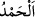
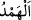

giyerler, iç âlemde/bâtında ise onların sîretlerine ve iç dünyâlarına muhâlif olan hallere
bürünürler. Onlar bu fiillerden vazgeçmez ve hâllerini değiştirmezlerse, Allah daha
önce geçen onların benzerlerine uyguladığı değiştirme ve başkalarını onların yerine
getirme konusundaki sünnetini icrâ edecektir. Her topluluk için suçlarına göre bir cezâ
vardır.
Mâlik b. Dînâr (r.a.) şöyle dedi: Hasan Basrî (r.h.)’a: “Âlimin cezâsı nedir?” diye
sordum. “Gönlün/kalbin ölmesidir.” dedi. “Gönlün/kalbin ölmesi neden olur?” diye
sordum. “Dünyâyı taleb etmekten” diye karşılık verdi. Şu halde mutlaka kalbi ihyâ ve
bâtını ıslâh etmek lâzımdır.
Nakledilir ki Cüneyd Bağdâdî (k.s.) âlimlere ve bilginlere mahsus bir elbise
giymişti. “Ey tarîkat pîri! Müridlere mahsus yamalı elbise giysen ne olurdu?” diye
sordular. Şu cevabı verdi: “Eğer yamalı (derviş) elbisesi giymekle işin hallolacağını
bilseydim, ateşten ve demirden bir elbise yapar giyerdim. Ancak içimde her an şöyle
seslenirler: “Îtibar hırkaya değil, îtibar ancak hurkaya/yanmayadır.”
Nizâmî der ki:
Ey içi takvâdan yoksun, dışında riyâ elbisesi olan adam.
Rengârenk elbiseyi çıkart üzerinden, zîra evinde hasır var senin.
Rivâyet edildiğine göre Hasan Basrî akşam namazı vakti Habîb Acemî’nin
hankâhının önünden geçiyordu. O, akşam namazı için kamet getirmiş ve namaza
durulmuştu. Hasan Basrî içeri girdi. Habîb Acemî namazda “yü “ şeklinde
okuyordu. Hasan Basrî, bunun arkasında kılınan namaz sahih olmaz diyerek ona uymadı
ve namazı kendi başına kıldı. Gece uyuyunca, rüyâsında Hak Teâlâ’yı gördü. “Ey
Rabbim! Senin rızan neydedir?” dedi. Şu hitap geldi: “Ey Hasan! Benim rızâmı elde
etmiştin, ama kıymetini bilmedin.” Hasan Basrî: “Ey Rabbim! O ne idi?” dedi. Şu nidâ
geldi: “Eğer sen Habîb’in ardında namaz kılsaydın, rızâmı elde etmiş olurdun. Bu
namaz, senin namazlarının mührü olacaktı. Fakat ibâdetin yanlışlığı seni niyetin
sıhhatinden alıkoydu. Dilin düzgünlüğüyle gönül düzgünlüğü arasında çok fark vardır.”
Şu halde akıllı kişiye gereken içi dışı ayrı olmaya ve nifaka değil, bilakis ihlasa ve içi
dışı uyumlu olmaya meyl etmektir.
Bu son iki âyetin zındıklar hakkında olduğu söylenir. Dünyâda her millet halkı onları
öldürür. Nitekim Keşfü’l-esrâr’da böyle geçmektedir. Zındık, küfrünü gizleyen mülhid
kimsedir. Ebû Hanîfe (r.a.) “Zındık tevbe ettim dese de onu öldürün” demiştir. Bazıları
şöyle demiştir: “Zındık, dehrin/zamanın bâkî ve sonsuz olduğunu söyleyen, yâni bir
ilâha, yeniden diriltilmeye ve haram kılınan şeylerden hiçbirinin haramlığına
inanmayan, malların müşterek olduğunu söyleyen kimsedir. Zındığın tevbesinin kabûlü
konusunda iki rivâyet vardır. Tercih edilen görüş tevbesinin kabul edilmeyeceğidir.
Allah onları ve onları takip eden diğer mülhidleri kahretsin. Özellikle onlara lânet etsin.
Yeryüzünü onların zuhûrundan ve şerlerinden korusun.